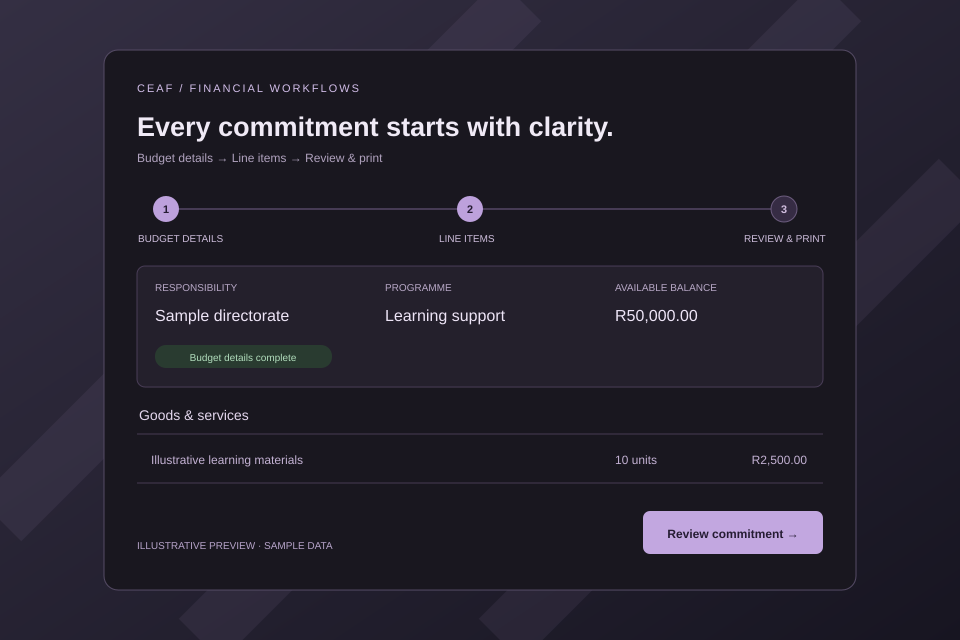

04 / Financial workflows
A better flow for
budget commitments.
A structured web workflow for commitment capture, budget checks, and printable approval forms — taking the process beyond an Excel template.
- My role
- Initial application development
- Built with
- PHP · MariaDB / MySQL
- Project status
- Private · Pre-production

The problem
A spreadsheet can calculate a balance without ensuring that someone has first selected the correct budget details. That makes a form look complete even when it is based on the wrong budget line.
The opportunity was to make the capture sequence part of the application, so the form itself guides the user through the required steps.
The workflow
- Capture the required budget segments before entering goods and services.
- Check line items against the available balance in the latest imported budget report.
- Keep a register of saved commitments and produce a form for printing and signature.
- Record the downstream requisition number against the commitment.
- Provide Budget Services with a view of commitments and exposure by budget line.
Designed for traceability
Each saved commitment retains its report reference and the balance shown at capture. That preserves the context of the original decision, even after a newer report is imported.
Role-based access gives clerks their assigned responsibility scope, while Budget Services can oversee the register and report uploads. The implementation uses PHP with MariaDB or MySQL.
Scope & status
The application records soft commitments. The capture screen shows the report’s available balance, while a separate exposure view shows the effect of recorded commitments.
This case study describes the developed application. Operational deployment and configuration steps remain before production use; it is not presented as a live departmental service.